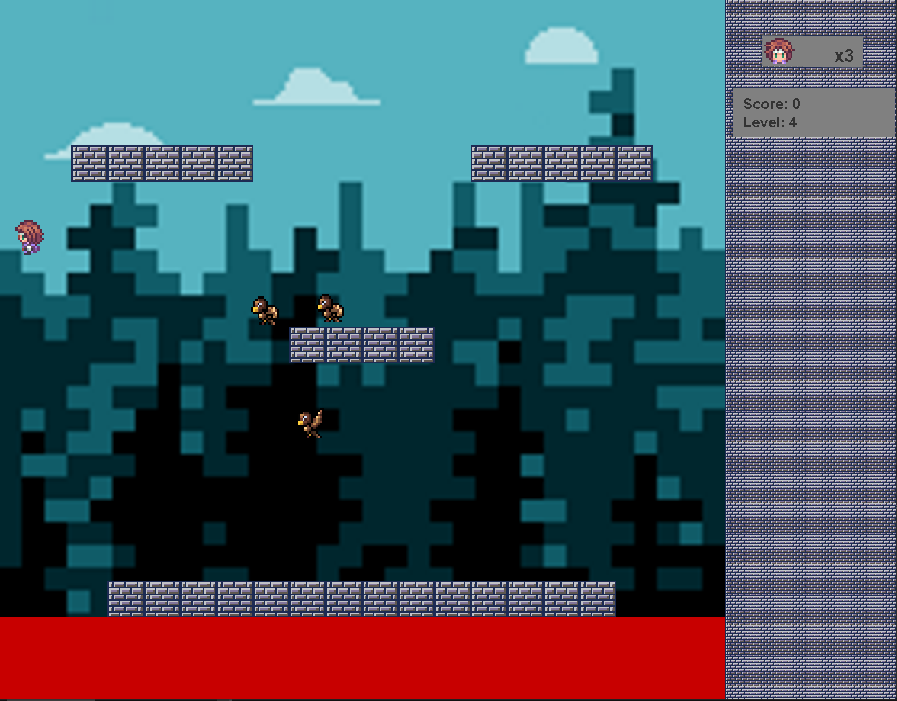
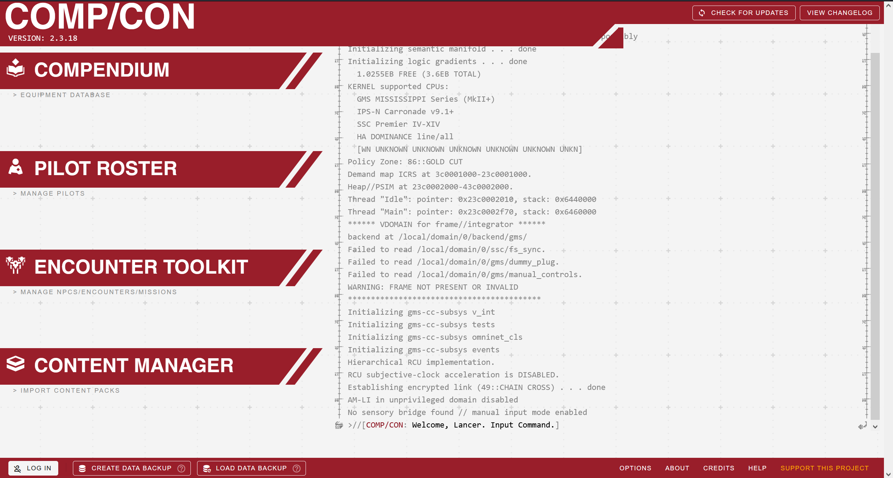

Portfolio
-
Joust arcade game
For one of my classes, I worked in a team of three to create a java based version of the joust arcade game. We utilized an approach where one of us planned ahead, one actively programmed, and the third watched over the sholder of the second giving suggestions on the best way to move forward on the given project.
-
Comp/Con contribution
During the summer between my frehsman and sophmore years, I contributed to an online data manager for one of the tabletop roleplaying games I like, known as LANCER. I mostly helped deal with some issues with hardcoded data, and made it more flexable for both other developers and for homebrewers that create independent content for the game.
-
"Healthbar" creation
During a local 24h hackathon event in my hometown, me and a team of other kids created a heathbar that took actual data from a survey users could fill out and displayed aproxamately how long they had left to live, in years. The idea was that people would make healthier choices if they could see their own healthbar.